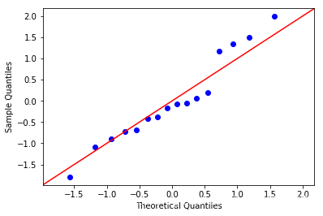
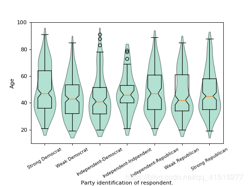
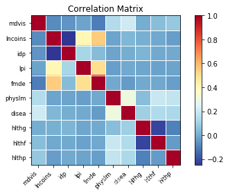
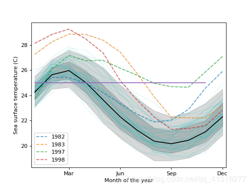

1. 拟合图
| Goodness of Fit Plots |
拟合图 |
| gofplots.qqplot |
QQ图。 |
| gofplots.qqline |
绘制一个qqplot的参考线 |
| gofplots.qqplot_2samples |
两个样本分位数的QQ图 |
| gofplots.ProbPlot |
自定义QQ图，PP图或概率图 |
>>> import statsmodels.api as sm
>>> from matplotlib import pyplot as plt
>>> import scipy.stats as stats
>>> data = sm.datasets.longley.load()
>>> data.exog = sm.add_constant(data.exog)
>>> mod_fit = sm.OLS(data.endog, data.exog).fit()
>>> res = mod_fit.resid
>>> fig = sm.qqplot(res, stats.t, fit=True, line='45')
>>> plt.show()

2. 箱线图
| Boxplots |
箱线图 |
| boxplots.violinplot |
在数据序列中为每个数据集制作小提琴图 |
| boxplots.beanplot |
在数据序列中创建每个数据集的bean图 |
>>> data = sm.datasets.anes96.load_pandas()
>>> party_ID = np.arange(7)
>>> labels = ["Strong Democrat", "Weak Democrat", "Independent-Democrat",
... "Independent-Indpendent", "Independent-Republican",
... "Weak Republican", "Strong Republican"]
>>> plt.rcParams['figure.subplot.bottom'] = 0.23
>>> age = [data.exog['age'][data.endog == id] for id in party_ID]
>>> fig = plt.figure()
>>> ax = fig.add_subplot(111)
>>> sm.graphics.violinplot(age, ax=ax, labels=labels,
... plot_opts={'cutoff_val':5, 'cutoff_type':'abs',
... 'label_fontsize':'small',
... 'label_rotation':30})
>>> ax.set_xlabel("Party identification of respondent.")
>>> ax.set_ylabel("Age")
>>> plt.show()

3. 相关图
| Correlation Plots |
相关图 |
| correlation.plot_corr |
相关图 |
| correlation.plot_corr_grid |
创建相关图的网格 |
| plot_grids.scatter_ellipse |
用置信度椭圆创建一个散点图网格 |
>>> import numpy as np
>>> import matplotlib.pyplot as plt
>>> import statsmodels.graphics.api as smg
>>> hie_data = sm.datasets.randhie.load_pandas()
>>> corr_matrix = np.corrcoef(hie_data.data.T)
>>> smg.plot_corr(corr_matrix, xnames=hie_data.names)
>>> plt.show()

4. 函数图
| Functional Plots |
函数图 |
| functional.hdrboxplot |
高密度区域箱线图 |
| functional.fboxplot |
绘制函数箱线图 |
| functional.rainbowplot |
为一组曲线创建一个彩虹图 |
| functional.banddepth |
计算一组函数曲线的带深度 |
>>> import matplotlib.pyplot as plt
>>> import statsmodels.api as sm
>>> data = sm.datasets.elnino.load()
>>> fig = plt.figure()
>>> ax = fig.add_subplot(111)
>>> res = sm.graphics.hdrboxplot(data.raw_data[:, 1:],
... labels=data.raw_data[:, 0].astype(int),
... ax=ax)
>>> ax.set_xlabel("Month of the year")
>>> ax.set_ylabel("Sea surface temperature (C)")
>>> ax.set_xticks(np.arange(13, step=3) - 1)
>>> ax.set_xticklabels(["", "Mar", "Jun", "Sep", "Dec"])
>>> ax.set_xlim([-0.2, 11.2])
>>> plt.show()

5. 回归图
| Regression Plots |
回归图 |
| regressionplots.plot_fit |
Plot fit against one regressor |
| regressionplots.plot_regress_exog |
针对一个回归模型绘制回归结果。 |
| regressionplots.plot_partregress |
绘制对于单个回归模型的部分回归。 |
| regressionplots.plot_ccpr |
将CCPR与一位回归模型对比。 |
| regressionplots.abline_plot |
绘制斜线 |
| regressionplots.influence_plot |
回归影响 |
| regressionplots.plot_leverage_resid2 |
Plots leverage statistics vs |
6. 时间序列图
| Time Series Plots |
时间序列图 |
| tsaplots.plot_acf |
绘制自相关函数 |
| tsaplots.plot_pacf |
绘制部分自相关函数 |
| tsaplots.month_plot |
每月数据的季节性 |
| tsaplots.quarter_plot |
季度数据的季节性 |
7. 其他
| Other Plots |
其他 |
| factorplots.interaction_plot |
对每个因子水平的交互作用图 |
| mosaicplot.mosaic |
马赛克图 |
| agreement.mean_diff_plot |
Tukey’s Mean Difference Plot |